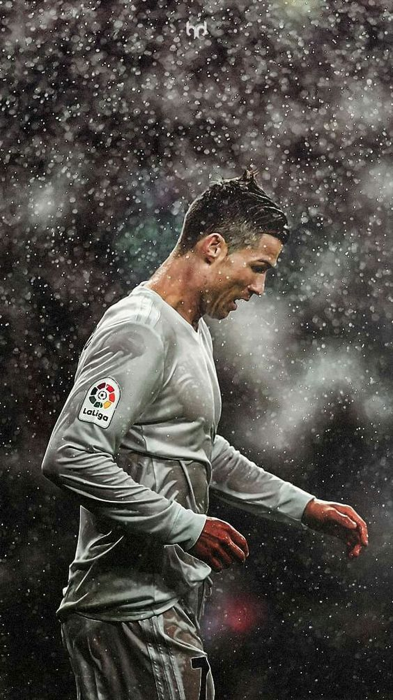
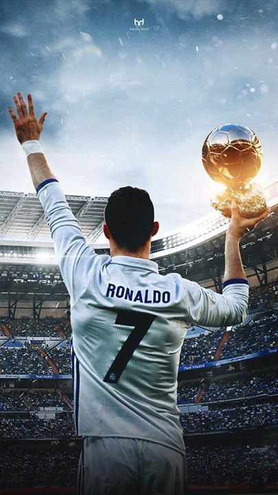

The European Cup was first held during the 1955–56 season, with a prestigious field consisting of clubs that had won their own country’s league championship. Real Madrid was the tournament’s first winner, defeating French club Stade de Reims in the final. It continued on a run of European dominance that no team has matched since.
Gifted players such as Ferenc Puskás, Alfredo Di Stéfano, Paco Gento, Hector Rial, and Miguel Muñoz helped the club win the first five European Cups in a row. The clubs play in the 1960 European Cup final against the West German team Eintracht Frankfurt—a 7–3 Real victory—is widely considered one of the finest club performances of all time.
